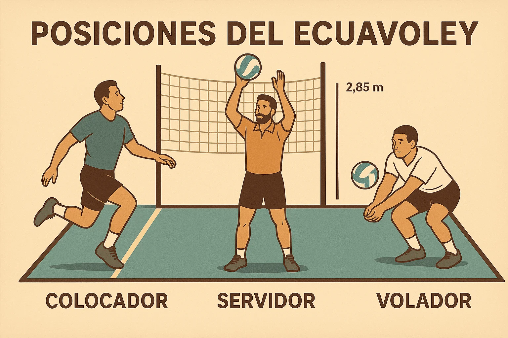

Comunicación
Los jugadores deben hablar entre sí para evitar confusiones durante la recepción y la defensa.
Un sitio educativo sobre este deporte tradicional del Ecuador.
En el ecuavóley se reconocen habitualmente tres funciones: colocador, servidor y volador.

| Posición | Función principal | Habilidad importante |
|---|---|---|
| Colocador | Organizar el ataque y enviar el balón al campo contrario. | Precisión y control. |
| Servidor | Apoyar el armado de las jugadas y el ataque. | Coordinación. |
| Volador | Defender el campo y recuperar balones difíciles. | Reflejos y agilidad. |
Los jugadores deben hablar entre sí para evitar confusiones durante la recepción y la defensa.